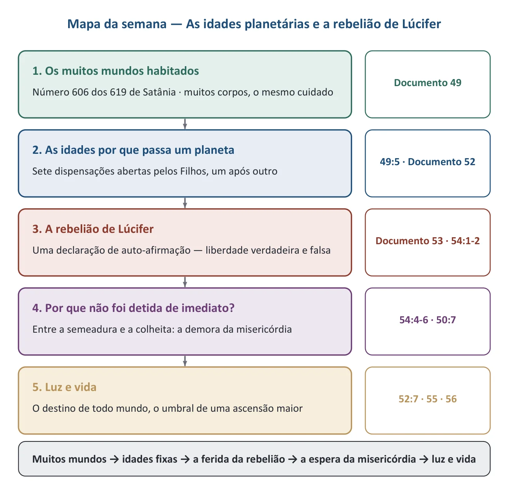
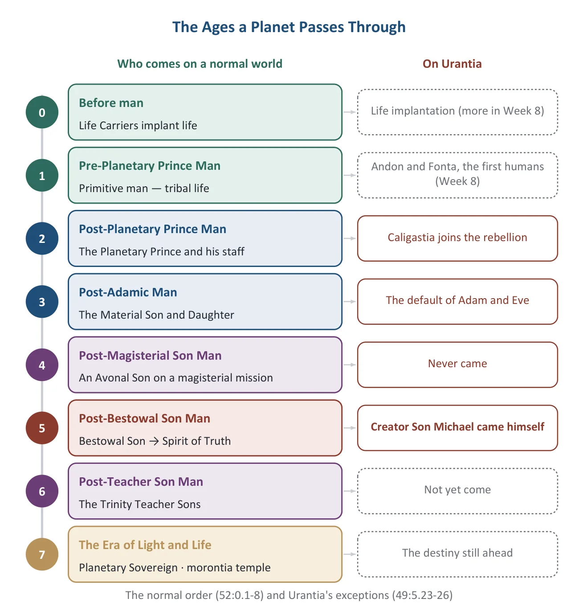
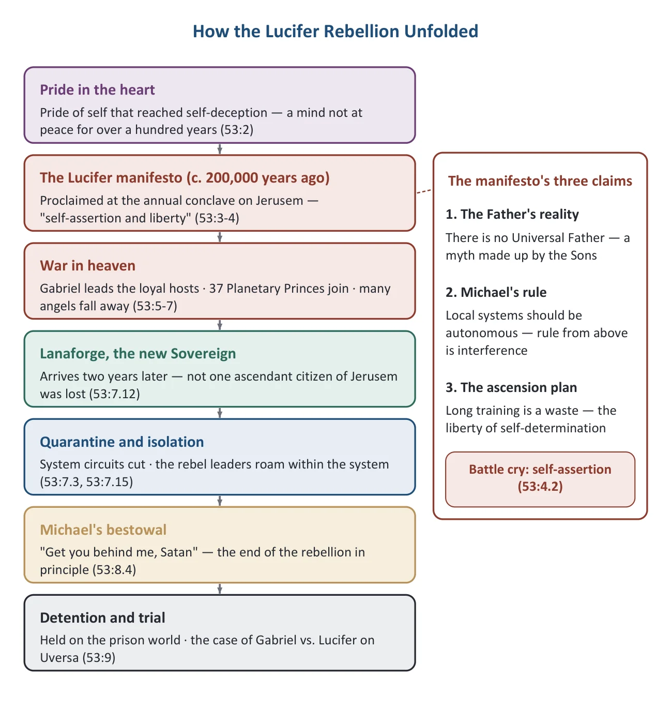
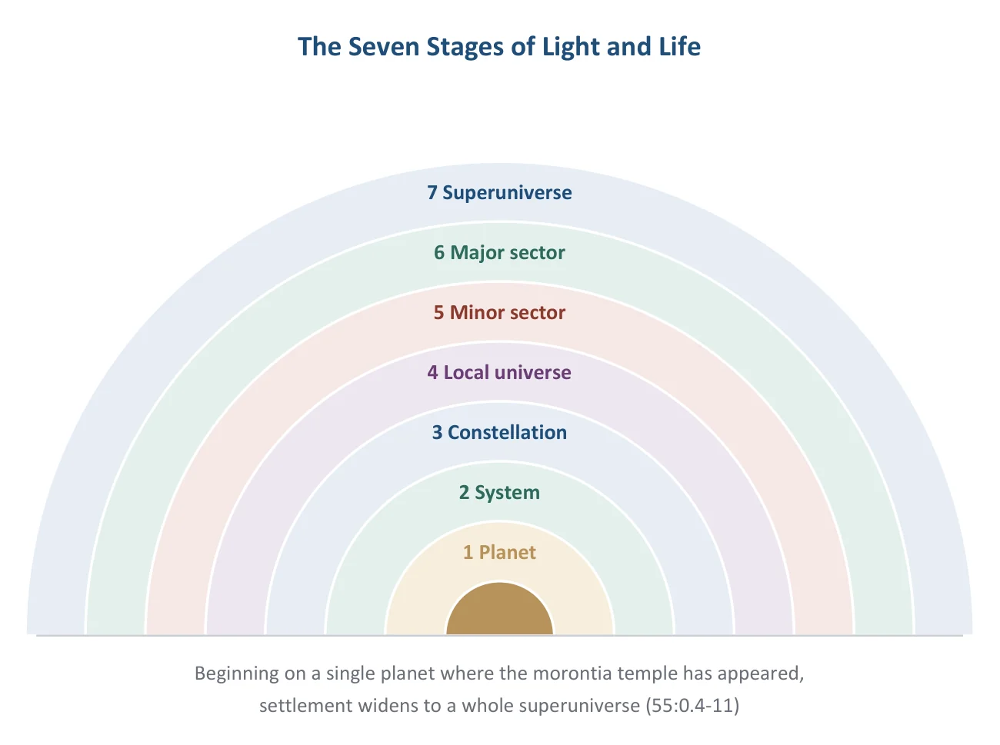

As idades planetárias e a rebelião de Lúcifer
Leitura: Documento 49 · Documento 52 · Documento 53 · Documento 54 · Documento 55 · Documento 56 (um primeiro olhar)

O universo contém muitíssimos mundos onde vivem pessoas. Num mundo normal os Filhos de Deus chegam um após o outro, e o planeta atravessa uma série fixa de idades rumo à era de luz e vida. Mas, há cerca de duzentos mil anos, Lúcifer, o soberano do nosso sistema, levantou uma rebelião em nome da “liberdade”, e Urântia foi lançada para muito longe dessa ordem. Nesta semana vemos em que a verdadeira liberdade difere da falsa, por que Deus não pôs fim à rebelião de imediato e que destino espera, no fim, todos os mundos.
História de abertura
O lavrador que semeia um campo não colhe na manhã seguinte. Nesse meio-tempo, o joio cresce junto com o trigo. Uma mão impaciente quer arar o campo inteiro de uma vez, mas o lavrador sábio espera até a colheita, porque arrancar cedo demais destruiria os bons brotos junto com os maus.
Os documentos 49 a 55, que lemos nesta semana, contam a história de um campo tão vasto quanto o universo. A semente da vida é semeada em incontáveis mundos, e em cada idade obreiros celestes vêm cultivá-la. No nosso sistema, porém, aquele a quem o campo foi confiado tentou fazer-se dono dele. Essa foi a rebelião de Lúcifer.
É uma história sombria com um final luminoso. A misericórdia escondida na espera e a era de luz e vida que todo mundo alcança no fim são o ponto de chegada desta semana.
1. Os muitos mundos habitados
O 606º mundo
Nas semanas anteriores seguimos a alma, depois da morte, subindo até os mundos das mansões e até Jerusém, a capital do sistema. Agora voltamos os olhos para baixo, para os planetas onde vivem pessoas. O Livro de Urântia chama esses planetas de mundos habitados, e o nosso sistema local, Satânia, contém um bom número deles.
Satânia, em si mesmo, é um sistema inacabado, que contém apenas 619 mundos habitados ainda. Tais planetas são enumerados seqüencialmente, de acordo com o seu registro como mundos habitados pelas criaturas de vontade. Assim, foi dado a Urântia o número 606, de Satânia, significando que é o 606o mundo do sistema local, no qual o longo processo da vida evolucionária culminou com o aparecimento de seres humanos.49:0.3
A nossa Terra é um de uns seiscentos mundos vizinhos. Não vivemos sozinhos no universo. E em cada um desses mundos o aparecimento dos seres humanos não é um acidente.
O homem mortal não é um acidente evolucionário. Há um sistema preciso, uma lei universal a qual determina o desdobramento do plano da vida planetária nas esferas do espaço.49:1.6
Muitos tipos de filhos, um só Pai
Os povos dos mundos habitados diferem notavelmente. O documento 49 explica que os corpos são projetados para o seu ambiente: a atmosfera, a terra, a água e o ar, a gravidade e a temperatura. Há até mundos cujos habitantes não respiram. Mas uma coisa permanece igual.
Há grandes diferenças entre os mortais dos diversos mundos, inclusive entre os que pertencem aos mesmos tipos intelectuais e físicos, mas todos os mortais que possuem a dignidade da vontade são animais eretos, bípedes.49:4.1
O cérebro também tem três tipos básicos. Esta passagem nos põe diante de um espelho.
A uniformidade física básica entre os tipos de mortais está em ter um cérebro e um sistema nervoso; entretanto, há três organizações básicas do mecanismo cerebral: o tipo de um cérebro, o de dois cérebros e o tipo de três cérebros. Os urantianos são do tipo de dois cérebros; um pouco mais imaginativos, aventureiros e filosóficos do que os mortais de um cérebro. No entanto são um tanto menos espirituais, éticos e menos adoradores do que as ordens de três cérebros.49:5.13
Curiosos e amigos da aventura, mas pouco exercitados na adoração: esse é o retrato que o livro faz de nós. Ainda assim, por mais que os corpos e os cérebros difiram, o cuidado do céu é o mesmo para todos.
Todos os diferentes tipos físicos e séries planetárias de mortais semelhantes beneficiam-se das ministrações dos Ajustadores do Pensamento, dos anjos guardiães e das várias ordens de hostes de mensageiros do Espírito Infinito. Da mesma forma, todos eles são liberados dos liames da carne pela emancipação causada pela morte natural e, todos do mesmo modo, deste ponto, vão para os mundos moronciais de evolução espiritual e progresso da mente.49:6.1
Os filhos podem parecer diferentes, mas o Pai é um só. A variedade não é um defeito do universo; é a sua riqueza.
| Ponto de comparação | O que difere de mundo para mundo | O que todos os mundos têm em comum |
|---|---|---|
| Corpo | Sete tipos físicos adequados à atmosfera, à gravidade e à temperatura | Seres eretos que andam sobre dois pés |
| Hábitat | Água, ar, terra, ou uma mistura de terra e ar | Surgimento por meio da evolução |
| Cérebro | De um cérebro, de dois cérebros (Urântia), de três cérebros | A mente como dom do Espírito Infinito |
| O cuidado do céu | Quando chegam os Filhos | Ajustadores, anjos guardiães, os mundos moronciais |
Palavras novas
- Mundo habitado: um planeta onde vivem mortais dotados de vontade. Urântia é o 606º mundo habitado de Satânia.
- Satânia: o sistema local a que pertence o nosso planeta, cuja capital é Jerusém. Um sistema tem como meta cerca de mil mundos habitados.
- Soberano do Sistema: o Filho que governa um sistema local. Até a rebelião, Lúcifer era o Soberano do Sistema de Satânia.
2. As idades por que passa um planeta
A ordem das sete idades
Assim como uma escola tem as suas séries, um planeta tem as suas idades. Depois que os Portadores da Vida implantam a vida e surgem os seres humanos, os Filhos de Deus chegam numa ordem fixa. Cada chegada abre uma nova idade, chamada dispensação.
DESDE o início da vida, em um planeta evolucionário, até a época do seu florescimento final na era de luz e vida surgem, no cenário da ação do mundo, ao menos sete épocas de vida humana. Essas sucessivas épocas são determinadas pelas missões planetárias dos Filhos divinos e, em um mundo habitado comum, tais eras aparecem na seguinte seqüência: 1. Homem antes do Príncipe Planetário. 2. Homem pós-Príncipe Planetário. 3. Homem pós-Adâmico. 4. Homem pós-Filho Magisterial. 5. Homem pós-Filho Auto-outorgado. 6. Homem pós-Filho Instrutor. 7. A Era de Luz e Vida.52:0.1-8
O Príncipe Planetário abre o caminho para a civilização e a sociedade, e Adão e Eva, o Filho e a Filha Materiais, elevam a raça no corpo e na mente. Depois chega a vez dos Filhos do Paraíso.
Quando os progressos intelectual e ético de uma raça humana alcançam os limites do desenvolvimento evolucionário, chega um Filho Avonal do Paraíso, em uma missão magisterial; e, mais tarde, quando o status espiritual desse mundo se aproxima do seu limite de realização natural, o planeta é visitado por um Filho do Paraíso, em auto-outorga. A missão principal de um Filho auto-outorgante é estabelecer o status planetário, liberar o Espírito da Verdade para a sua função planetária e, assim, efetivar a vinda universal dos Ajustadores do Pensamento.49:5.25
Quando o Filho auto-outorgado termina a sua missão, o mundo chega a uma grande virada. O espírito do Filho é efundido e, a partir de então, o espírito de Deus vem residir em cada pessoa.
Após isso, o Filho Avonal auto-outorgado e o Criador Michael enviam o espírito conjunto deles, o Espírito da Verdade, ao mundo da auto-outorga. … concomitantemente, há a proclamação da ordem para a outorga dos Ajustadores do Pensamento. A partir de então toda criatura volitiva de mente normal, daquele mundo, receberá o Ajustador tão logo atinja a idade da responsabilidade moral e de escolha espiritual.52:5.6
A ordem tem as suas razões. Cada Filho constrói sobre o terreno que o anterior preparou. Primeiro vem a elevação biológica, depois o progresso ético, depois o despertar espiritual. O princípio que vimos na semana 1, de que a revelação é dada na medida que as pessoas podem suportar, aqui dá forma a toda a história de um planeta.
A religião é integralmente um processo da evolução, antes da chegada do Príncipe Planetário. Subseqüentemente, a religião progride por meio da revelação gradativa, bem como pelo crescimento evolucionário. Cada dispensação, cada época mortal, recebe uma apresentação ampliada da verdade espiritual e da ética religiosa.52:2.3

Um planeta fora de ordem
Ponha esse calendário-padrão ao lado de Urântia e quase todas as colunas estão fora do lugar. Caligástia, o Príncipe Planetário, aderiu à rebelião, e Adão e Eva não completaram a sua missão. A coluna seguinte é ainda mais surpreendente.
Com relação a isso, novamente, Urântia desviou-se: nunca houve uma missão magisterial no vosso mundo, nem o vosso Filho auto-outorgado foi da ordem Avonal; o vosso planeta desfrutou da honra insigne de tornar-se o planeta lar mortal do Filho Soberano, Michael de Nébadon.49:5.26
Ao mais perturbado dos planetas veio em pessoa, como homem, o Criador do universo. Mas a sua vinda não trouxe paz à Terra de imediato.
O Filho auto-outorgado é o Príncipe da Paz. … Essas influências salutares, contudo, não acompanharam a vinda do vosso Filho auto-outorgado, Cristo Michael. Urântia não está avançando na seqüência normal. O vosso mundo está fora de passo, na procissão planetária.52:6.1
As guerras e divisões do nosso mundo são sinais de que este planeta foi gravemente ferido muito cedo na sua história. Essa ferida é o assunto da próxima seção.
| Idade | Quem vem | O que a idade traz |
|---|---|---|
| 1 Antes do Príncipe Planetário | O cuidado dos Portadores da Vida | Surge o homem primitivo; vida tribal |
| 2 Depois do Príncipe Planetário | O Príncipe Planetário e o seu corpo de assessores | A civilização, o lar, a primeira religião revelada |
| 3 Depois de Adão | O Filho e a Filha Materiais | Melhoramento racial, invenção, internacionalismo |
| 4 Depois do Filho Magisterial | Um Filho Avonal | Libertação econômica, auge intelectual |
| 5 Depois do Filho auto-outorgado | O Filho auto-outorgado | O Espírito da Verdade; Ajustadores para todos |
| 6 Depois dos Filhos Instrutores | Os Filhos Instrutores da Trindade | A lealdade espiritual torna-se universal |
| 7 Luz e vida | A idade do Soberano Planetário | Paz estabelecida e crescimento contínuo |
Palavras novas
- Dispensação: um trecho da história planetária aberto quando um Filho de Deus chega a um mundo. Cada nova chegada inicia uma nova dispensação.
- Filho Magisterial: o Filho do Paraíso, também chamado de Avonal, que conhecemos pelo nome na semana 4. Ele julga as idades de um planeta e às vezes vem na carne, numa missão magisterial.
- Filho auto-outorgado: um Filho do Paraíso que se outorga a um mundo evolucionário. A Urântia veio em pessoa o Filho Criador Michael.
Ao lado da Bíblia
Jesus disse: “Não cuideis que vim trazer a paz à terra” (Mateus 10:34), e falou de antemão de “guerras e rumores de guerras” (Mateus 24:6). O documento 52 explica essas palavras pelo fato de Urântia estar fora de passo com a ordem planetária normal (52:6.1). O Príncipe da Paz veio, mas a paz demora, e O Livro de Urântia procura a razão na história do planeta.
3. A rebelião de Lúcifer — uma declaração de falsa liberdade
A queda de um Filho brilhante
Lúcifer não era mau desde o início. Ele era uma das personalidades mais destacadas entre os Filhos Lanonandeques criados no universo local.
LÚCIFER era um brilhante Filho Lanonandeque primário de Nébadon. Possuía experiência de serviço em muitos sistemas, havia sido um alto conselheiro do seu grupo e distinguira-se pela sabedoria, sagacidade e eficiência. … Vindo de um começo tão magnífico, por meio do mal e do erro, abraçou o pecado, e agora está numerado como um dos três Soberanos de Sistemas em Nébadon que sucumbiram ao impulso do ego e renderam-se aos sofismas de uma liberdade pessoal espúria — a rejeição da lealdade universal, a desconsideração pelas obrigações fraternais e a cegueira para as relações cósmicas.53:0.1
Como pôde um ser assim cair? O documento 53 não procura a causa em circunstâncias exteriores. Nada em Satânia convidava especialmente à rebelião.
Muito difícil torna-se apontar uma causa, ou causas exatas que finalmente culminaram na rebelião de Lúcifer. Estamos certos quanto a uma única coisa, e esta é: quaisquer que tenham sido as causas iniciais, elas tiveram a sua origem inteiramente na mente de Lúcifer. Deve ter havido um orgulho do ego, nutrido por ele próprio, a ponto de levar Lúcifer a iludir a si mesmo de um modo tal que, durante um certo tempo, realmente se haja persuadido de que a idéia rebelde, de fato, era para o bem do sistema, se não do universo. … A ele foi oferecida, desde longa data, a oportunidade clara de arrependimento; no entanto, apenas alguns dos seus subordinados aceitaram a misericórdia oferecida.53:2.5
A palavra a notar é “iludir a si mesmo”. No começo Lúcifer acreditava estar fazendo o que era certo. O orgulho sempre marcha atrás de uma causa aparentemente justa. Depois, em algum ponto, ele já tinha ido longe demais para voltar atrás.
As três reivindicações do manifesto de Lúcifer
A rebelião irrompeu há cerca de duzentos mil anos, como uma declaração pública no conclave anual de Jerusém.
Quaisquer hajam sido as origens primeiras do desacerto nos corações de Lúcifer e de Satã, a explosão final tomou forma na Declaração de Liberdade de Lúcifer. A causa dos rebeldes foi declarada sob três pontos principais:53:3.1
A primeira reivindicação dizia respeito a Deus.
1. A realidade do Pai Universal. Lúcifer alegou que o Pai Universal não existe realmente, que a gravidade física e a energia do espaço são inerentes ao universo e que o Pai seria um mito, inventado pelos Filhos do Paraíso, no fito de capacitá-los a manter o governo dos universos em nome Dele.53:3.2
A segunda dizia respeito ao governo do universo.
2. O governo universal do Filho Criador — Michael. Lúcifer sustentava que os sistemas locais deveriam ser autônomos. … Estava disposto a reconhecer Michael como o seu Pai-Criador, mas não como o seu Deus, nem como o seu governante de direito.53:3.3
A terceira visava diretamente a nós, os mortais ascendentes.
3. O ataque ao plano universal de aperfeiçoamento dos ascendentes mortais. Lúcifer sustentava que um tempo longo demais e uma energia excessiva estavam sendo despendidos no esquema de instruir e preparar tão cuidadosamente os mortais ascendentes, nos princípios da administração do universo, princípios estes que, ele alegava, seriam sem ética e malsãos. … Advogava que os seres ascendentes deveriam desfrutar da liberdade da autodeterminação individual.53:3.6
Numa única linha, as três reivindicações dizem: não há Pai, o governo de cima é interferência, e o longo aperfeiçoamento é um desperdício. O lema que as unia era a auto-afirmação.
A auto-afirmação foi o grito de batalha da rebelião de Lúcifer.53:4.2
Gabriel não respondeu com a força. Anunciou apenas que todo ser seria livre para escolher.
Gabriel esteve pessoalmente presente durante o suceder de todos esses procedimentos desleais e apenas anunciou que iria, no devido tempo, falar por Michael; e que todos os seres seriam deixados livres e não seriam forçados nas suas decisões; que o “governo dos Filhos, em nome do Pai, desejava apenas a lealdade e a devoção voluntárias, de coração e à prova de sofismas”.53:4.6

A rebelião se espalhou por todo o sistema. Os príncipes de trinta e sete planetas tomaram o partido de Lúcifer, e muitos anjos passaram para o lado dele. Mas um grupo nunca vacilou.
Os mortais ascendentes, mesmo sendo vulneráveis, resistiram aos sofismas da rebelião, com mais facilidade do que os seres espitiruais menos elevados. … ficou registrado, para a glória da sabedoria do esquema de ascensão, que nem um membro sequer, com cidadania ascendente em Satânia e residente em Jerusém, participou da rebelião de Lúcifer.53:7.10
Quando Lanaforge, o novo Soberano do Sistema, chegou pouco mais de dois anos depois, esta foi a primeira notícia que ele enviou à sede-central da constelação.
“Não se perdeu um único cidadão de Jerusém. Todos os mortais ascendentes sobreviveram à dura prova e emergiram triunfantes e vitoriosos do teste crucial”. E uma mensagem chegou em Sálvington, em Uversa e no Paraíso, transmitindo a certeza de que a experiência de sobreviver, na ascensão mortal, é a maior proteção contra a rebelião e a salvaguarda mais segura contra o pecado.53:7.12
Os que haviam recebido justamente o aperfeiçoamento ascendente que Lúcifer ridicularizava como inútil foram os que se mantiveram mais firmes. A verdade conquistada pela experiência é mais forte do que o sofisma deslumbrante.
Verdadeira liberdade e falsa liberdade
“Liberdade” estava escrita na bandeira de Lúcifer. Por isso o documento 54 diz que a confusão mais profunda que a rebelião deixou é a incapacidade de distinguir a verdadeira liberdade da falsa.
A liberdade verdadeira é uma busca de idades e a recompensa do progresso evolucionário. A falsa liberdade é o engano sutil do erro, no tempo, e do mal, no espaço.54:1.2
Em seguida, traça a linha entre elas.
A verdadeira liberdade é derivada do auto-respeito genuíno; a falsa liberdade é companheira da auto-admiração. A verdadeira liberdade é fruto do controle de si próprio; a liberdade falsa é fruto da pretensão da afirmação do ego. O autocontrole conduz ao serviço altruísta. A admiração de si próprio tende a conduzir à exploração dos outros, visando um engrandecimento individual egoísta e no erro. Tal indivíduo, por egoísmo, dispõe-se a sacrificar a realização, na retidão, pela posse de um poder injusto sobre os seus semelhantes.54:1.6
A falsa liberdade começa com “o direito de fazer o que eu quiser” e termina dominando os outros. A verdadeira liberdade começa com o governo de si mesmo e dá fruto no serviço aos outros. Qual foi, então, exatamente o erro de Lúcifer?
A loucura de Lúcifer foi tentar fazer o não-factível: abreviar o tempo, por um atalho, em um universo experiencial. … Em resumo, o que Deus dera aos homens e anjos, Lúcifer lhes queria tirar; isto é, o privilégio divino de participar na criação dos seus próprios destinos e do destino deste sistema local de mundos habitados.54:2.3-4
“Abreviar o tempo, por um atalho” significa saltar o processo e agarrar o resultado, como a corrente que salta num curto-circuito. A ironia é que uma rebelião que gritava por liberdade tentou tirar de todo ser a liberdade real de participar, pelo próprio crescimento, da construção do universo. O documento 54 resolve a questão numa só frase.
Nenhum ser, em todo o universo, possui liberdade, por direito, de privar qualquer outro ser da verdadeira liberdade, do direito de amar e ser amado, do privilégio de adorar a Deus e servir aos seus semelhantes.54:2.5
| Ponto de comparação | Verdadeira liberdade | Falsa liberdade |
|---|---|---|
| Companheira | O auto-respeito genuíno | A auto-admiração |
| Raiz | O fruto do controle de si próprio | A pretensão da afirmação do ego |
| Fruto | O serviço altruísta | A exploração dos outros, o poder injusto |
| Tempo | A recompensa de um longo progresso | A impaciência de saltar o processo |
| Relação com a realidade | Respeita a justiça, a eqüidade e a fraternidade | Separada da realidade e do dever, destrói a si mesma |
Palavras novas
- Filho Lanonandeque: a ordem de Filhos do universo local que conhecemos na semana 5; dela vêm os Soberanos dos Sistemas e os Príncipes Planetários. Lúcifer, Satã e Caligástia eram todos Lanonandeques.
- Manifesto de Lúcifer: a declaração de rebelião que Lúcifer emitiu em Jerusém, também chamada de Declaração de Liberdade. Ela atacava a realidade do Pai, o governo de Michael e o plano de ascensão mortal.
- Gabriel: o executivo principal do universo local de Nébadon. Durante a rebelião, ele comandou as hostes leais em nome de Michael.
Ao lado da Bíblia
Isaías canta: “Como caíste desde o céu, ó estrela da manhã, filha da alva!” (Isaías 14:12), e o Apocalipse relata: “E houve batalha no céu: Miguel e os seus anjos batalhavam contra o dragão” (Apocalipse 12:7). O documento 53 liga esses versículos à rebelião de Lúcifer e explica que a “guerra nos céus” não foi uma batalha de espadas, mas uma disputa entre a verdade e o sofisma, em que estava em jogo a vida eterna (53:5.6-7).
4. Por que não foi detida de imediato? — A demora da misericórdia
Um Pai que espera
Quase todos os que lêem esta parte fazem a mesma pergunta: se Deus é todo-poderoso, por que Ele não acabou com a rebelião no primeiro dia? O autor do documento 54 não foge da pergunta. Ele começa lembrando o coração de um pai e de uma mãe.
Os pais, aqueles que geram e criam filhos, estão mais aptos para compreender por que Michael, um Criador-pai, possa ser lento em condenar e destruir seus próprios Filhos. A história do filho pródigo, que Jesus narrava, ilustra bem o quanto um pai amoroso pode esperar, por um longo tempo, pelo arrependimento de um filho que haja errado.54:4.2
Em seguida mostra como a justiça e a misericórdia trabalham juntas no tempo. Aqui volta o lavrador da nossa história de abertura.
A justiça suprema pode agir instantaneamente quando não restringida pela misericórdia divina. Mas a ministração da misericórdia aos filhos do tempo e do espaço vem sempre provida desse retardamento temporal, desse intervalo salvador, entre época de semear e hora de colher. Se a semente plantada é boa, esse intervalo provê a prova e a edificação do caráter; se o plantio é mau, esse retardamento misericordioso provê tempo para arrependimento e retificação. … O refreamento da justiça, pela misericórdia, prova que Deus é amor, que este Deus do amor domina os universos e que Ele, com misericórdia, controla o destino e o julgamento de todas as Suas criaturas.54:4.6

Razões da demora
Primeiro precisamos ver em que posição Michael estava naquela época. Ele ainda não tinha completado a sua sétima auto-outorga, a sua vida em Urântia.
Na época dessa rebelião e das duas que a precederam, não havia nenhuma autoridade soberana absoluta e pessoal no universo de Nébadon. Michael governava por direito divino, como vice-regente do Pai Universal, mas não ainda pelo seu próprio direito pessoal.53:5.2
A seção 5 do documento 54 dá doze razões pelas quais os rebeldes não foram detidos mais cedo. As primeiras dizem:
1. A misericórdia requer que todos os malfeitores tenham tempo suficiente para formular uma atitude deliberada e plenamente determinada a partir dos seus maus pensamentos e atos transgressores. 2. A justiça suprema é dominada pelo amor do Pai; portanto a justiça jamais destruirá aquilo que a misericórdia pode salvar. Um período de tempo para aceitar a salvação é garantido a todo malfeitor. 3. Nenhum pai afeiçoado precipita-se em aplicar uma punição a um membro da sua família que cometeu um erro. A paciência não pode funcionar independentemente do tempo.54:5.2-4
A espera não era só pelos rebeldes. Incontáveis seres que hesitavam à margem precisavam de tempo para refletir e escolher. Se a rebelião tivesse sido esmagada pela força, sementes de dúvida teriam ficado enterradas no solo.
Para manter as portas do Paraíso abertas para a ascensão, aos seres de Norlatiadeque, seria necessário dar chances de pleno desenvolvimento à rebelião e assegurar a completa determinação de atitude da parte de todos os seres relacionados, de algum modo, a ela.54:5.10
Outra razão é que o nosso senso do tempo é estreito.
O lapso relativo de tempo, do ponto de vista de Uversa, onde o litígio está pendente, poderia ser indicado, se disséssemos que o crime de Lúcifer foi levado a julgamento dois segundos e meio depois de cometido. Do ponto de vista do Paraíso, no entanto, o julgamento é simultâneo ao ato.54:5.13
Para nós duzentos mil anos parecem intermináveis, mas nos tribunais do superuniverso são um piscar de olhos. O autor acrescenta que em Uversa se ensinam quarenta e oito razões, e que provavelmente há outras tantas que não conhecemos (54:5.14).
Ligados como uma só família
Ainda resta uma pergunta: por que os inocentes devem partilhar o custo? O documento 54 responde com a imagem de uma família.
Se um pai afeiçoado de uma grande família, escolhe demonstrar misericórdia a um dos seus filhos, culpado por graves erros, pode muito bem acontecer que essa extensão da misericórdia, ao filho mal-comportado, resulte em provações temporárias para todos os outros filhos bem-comportados. Essas eventualidades são inevitáveis; e tal risco se faz inseparável da situação da realidade de se ter um pai cheio de amor e ser um membro de um grupo familiar.54:6.3
Estar ligado como família significa partilhar tanto a alegria quanto a dor. Mas essa dor tem um limite claro.
Entretanto, uma coisa deve ficar clara: … podeis ficar seguros na certeza eterna de que tais atribulações serão aflições passageiras. Nenhuma dessas conseqüências do erro dos seres fraternos, do mau comportamento grupal, pode jamais colocar em perigo as vossas perspectivas eternas, nem vos privar, no mínimo grau que seja, do vosso direito divino de ascensão ao Paraíso e de alcançar a Deus.54:6.4
A falta de outro pode ferir uma vida, mas não pode tirar a eternidade de ninguém. E a espera deu fruto.
A princípio, o levante de Lúcifer pareceu constituir uma calamidade sem atenuantes para o sistema e mesmo para o universo. Gradualmente os benefícios começaram a acumular-se. … Os Melquisedeques ensinam agora que o bem que resulta da rebelião de Satânia é mais do que mil vezes a soma de todo o mal.54:6.6
O fim da rebelião e a dádiva do isolamento
Quando terminou a rebelião, em princípio? O documento 53 encontra esse momento na tentação no deserto, quando Jesus, o Filho do Homem, recusou as propostas de Lúcifer.
A sobrevivência, para os mortais, e a segurança, para os anjos, foram afirmadas quando o vosso Mestre, em resposta às propostas de Lúcifer, calmamente e com certeza divina, respondeu: “Vai retro, Satã”. Esse foi, em princípio, o fim real da rebelião de Lúcifer.53:8.4
Depois da rebelião, Urântia tornou-se um mundo isolado, com os seus circuitos para os outros mundos cortados. Até esse aparente infortúnio esconde uma dádiva.
Entretanto, o isolamento dessas esferas proporciona às suas raças uma oportunidade única para o exercício da fé e o desenvolvimento de uma qualidade especial de confiabilidade cósmica: uma convicção que não depende da vista nem de qualquer outro aspecto material. Pode ser que isso, finalmente, acarrete o resultado de que as criaturas mortais provenientes dos mundos em quarentena, em conseqüência da rebelião, sejam extremamente afortunadas.50:7.1
Ascendentes assim recebem um nome especial.
Em Jerusém, os seres ascendentes desses mundos isolados ocupam um setor residencial deles próprios e são conhecidos como agondonteiros; esta palavra significando criaturas evolucionárias de vontade que podem acreditar sem ver, que perseveram quando isoladas e que triunfam sobre dificuldades insuperáveis, até mesmo quando isoladas em solidão.50:7.2
Não há escola melhor para aprender a crer sem ver. O documento 54 encerra a questão da espera em poucas palavras.
A justiça, num universo dominado pela misericórdia, pode ser lenta, mas é certa.54:4.8
Palavras novas
- Quarentena: a medida que isolou dos circuitos do universo os planetas envolvidos na rebelião. Urântia é um deles.
- Agondonteiro: o nome dado aos ascendentes de mundos isolados que creram sem ver e perseveraram sozinhos.
- Gabriel versus Lúcifer: a causa pendente no tribunal do superuniverso em Uversa que trata da decisão final sobre os líderes rebeldes.
Esclarecendo um mal-entendido
Mal-entendido comum: Deus criou o mal, ou pelo menos permitiu a rebelião. O que diz O Livro de Urântia: os Deuses não criam o mal, nem permitem o pecado e a rebelião (54:0.2). Eles deram o livre-arbítrio e, para que essa liberdade seja real, tem de existir também a possibilidade de escolher mal (54:3.1). A misericórdia apenas concede tempo para que essas escolhas amadureçam; ela nunca aprova o mal.
Esclarecendo um mal-entendido
Mal-entendido comum: o diabo se apodera das pessoas e as força a pecar. O que diz O Livro de Urântia: nenhum espírito caído tem o poder de invadir a mente de um filho de Deus, e a fé é uma armadura eficaz contra o pecado (53:8.8). Muito do que se atribui ao diabo vem das tendências humanas (53:8.9).
5. Luz e vida — o destino de um planeta
Para onde vai cada mundo
A história de rebelião e confusão não termina em desespero. O último capítulo das sete idades é uma promessa de que nenhum mundo é abandonado.
Não importa qual possa ser a história natural especial de um planeta específico, nenhuma diferença faz se um reino tenha sido realmente leal, se foi manchado pelo mal, ou amaldiçoado pelo pecado — não importa os antecedentes que possa ter tido — , mais cedo ou mais tarde, a graça de Deus e a ministração dos anjos farão chegar o dia do advento dos Filhos Instrutores da Trindade; e a sua partida, que se segue à sua missão final, irá inaugurar essa era magnífica de luz e vida.52:7.14
Nem mesmo um mundo “amaldiçoado pelo pecado” fica de fora. Urântia também chegará a essa idade, ainda que tarde e por um caminho mais longo. O documento 55 não esconde as montanhas que ainda temos pela frente.
A grande dificuldade que Urântia encontra, para alcançar o alto destino planetário de luz e vida, provém dos problemas da doença, degenerescência, guerra, existência das raças multicoloridas e multilingüismo.55:3.21
Como é um mundo de luz e vida
Num mundo estabelecido em luz e vida, até a morte muda.
A morte natural, física, não é uma inevitabilidade para os mortais. A maioria dos seres evolucionários avançados, cidadãos dos mundos que já se encontram na era final de luz e vida, não morre; eles são transladados diretamente da vida na carne para a existência moroncial.55:2.1
Isso não faz de um mundo assim um céu sem falhas.
Durante essa idade de luz e vida, o mundo prospera crescentemente sob o governo paternal do Soberano Planetário. Durante esse tempo os mundos progridem sob a impulsão viva de uma única língua, religião única e, nas esferas normais, uma única raça. Mas essa idade não é perfeita.55:3.1
Ainda há hospitais, ainda acontecem acidentes, e ainda há o mal a ser escolhido ou recusado. O documento 55 adverte mais de uma vez contra confundir um mundo assim com o céu.
Mas tais seres sendo ainda mortais continuam respirando, comendo, dormindo e bebendo. Essa grande evolução não é o céu; mas é um prognóstico sublime a antever os mundos divinos, na ascensão ao Paraíso.55:6.2
Luz e vida não é um fim, mas o umbral de uma viagem maior. A partir do planeta, o estabelecimento se amplia por sete estágios, até o sistema, a constelação, o universo local e além (55:0.4-11).

Como seria ver um mundo assim, ainda que uma só vez?
Se os mortais dessa desequilibrada Urântia pudessem apenas visualizar um desses mundos mais avançados há muito estabelecidos em luz e vida nunca mais iriam eles questionar a sabedoria do esquema evolucionário da criação. Não houvesse nenhum futuro de progresso eterno para a criatura, ainda assim as realizações evolucionárias magníficas das raças mortais, nesses mundos estabelecidos de realizações perfeccionadas, justificariam amplamente a criação do homem nos mundos do tempo e do espaço.55:6.9
Uma história que se reúne na unidade
O documento 56, o último da Parte II, amarra toda essa variedade e todas essas reviravoltas. Os muitos mundos, as sete idades, a rebelião e a recuperação, tudo se torna uma só história no Deus único. O documento 56 dá ao clímax dessa história o nome de beleza.
A suprema beleza, o ponto culminante da arte finita, é o drama de unificação na vastidão dos extremos cósmicos: Criador e criatura. O homem encontrando Deus e Deus encontrando o homem — a criatura tornando-se perfeita como o Criador o é — , essa é a conquista superna do supremamente belo, o atingir do ápice da arte cósmica.56:10.3
O lavrador espera porque confia no dia da colheita. A história sinuosa do nosso planeta também caminha para essa colheita. A partir da próxima semana entramos na Parte III e acompanhamos desde o começo a história deste mesmo planeta, Urântia.
Pontos-chave da semana
- Satânia tem 619 mundos habitados, e Urântia é o 606º. Os corpos e os cérebros diferem de mundo para mundo, mas o cuidado do céu é o mesmo.
- Um mundo normal passa por sete idades à medida que chegam, um após o outro, o Príncipe Planetário, Adão e Eva, um Filho Magisterial, um Filho auto-outorgado e os Filhos Instrutores.
- Urântia saiu da ordem por causa da rebelião do Príncipe Planetário e da falta de Adão, mas foi honrada com a vinda em pessoa, como homem, do Criador Michael.
- A rebelião de Lúcifer nasceu de um orgulho que chegou a iludir a si mesmo, e negou a realidade do Pai, o governo de Michael e o plano de ascensão.
- A verdadeira liberdade é fruto do controle de si próprio e conduz ao serviço; a falsa liberdade parte da auto-afirmação e explora os outros.
- A rebelião não foi encerrada de imediato porque a misericórdia dá a todo ser tempo para escolher, e as suas atribulações não podem tirar de ninguém o futuro eterno.
- Todo mundo chega afinal a luz e vida, e isso não é um fim, mas o umbral de uma ascensão maior.
Perguntas para refletir
- Medida por 54:1.6, aquilo que você hoje chama de “liberdade” é fruto do controle de si próprio ou da pretensão da afirmação do ego?
- Como a idéia de que esperar é misericórdia (54:4.6) ilumina o modo como você enfrenta as mudanças lentas na sua própria vida ou os erros dos outros?
- Por que crer sem ver num planeta isolado (50:7.2) pode ser uma oportunidade e não um infortúnio?
Leitura para a próxima semana
- Documentos 57–67 — A aurora do planeta, a manhã da humanidade: o nascimento de Urântia e o começo da vida, os primeiros seres humanos e a idade do Príncipe Planetário